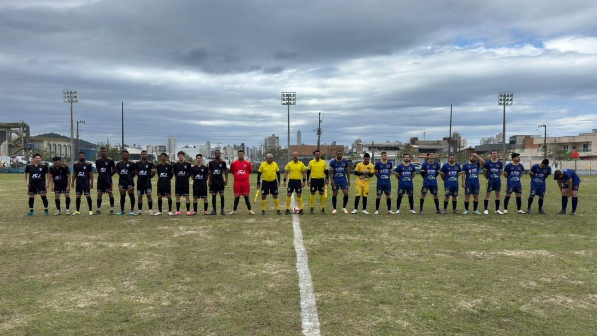
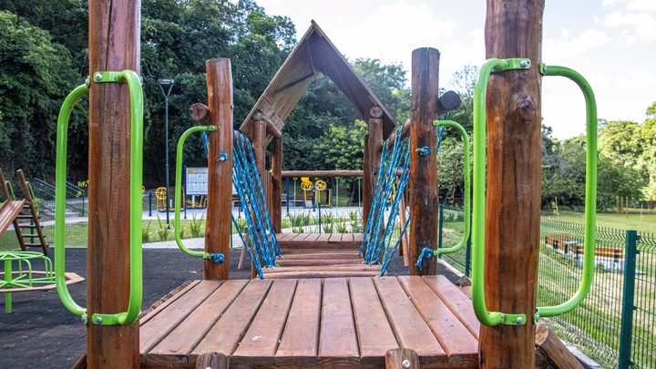

Itapema · Esporte
Itapema · EsporteCampeonato Itapemense de Futebol Amador começa domingo com oito times na Série A
A matéria de agosto que deixou em aberto as duas perguntas respondidas agora.
A Secretaria de Esportes abriu na sexta, 25 de setembro, as inscrições de duas competições novas de futebol de campo: a Série B do Campeonato Itapemense de Futebol Amador 2026 e o Veterano 40 anos. O cadastro vai até 2 de outubro e os Congressos Técnicos ficam para 5 de outubro. Em agosto escrevemos que a Prefeitura não tinha dito se havia Série B nem quais eram os oito times da Série A. As duas respostas chegaram, e a Série A estreou em 6 de setembro, sete dias depois da data anunciada, conta nossa.
Em 30 segundos · Modo de Leitura, formato original Santa Informa
Itapema vai ter mais dois campeonatos de futebol de campo.
Um é a Série B do Campeonato Itapemense 2026.
O outro é o Veterano 40 anos.
As inscrições abriram na sexta, 25 de setembro.
Vão até 2 de outubro.
Quem se inscreve é a equipe, não o jogador sozinho.
O cadastro é pelo site da Secretaria de Esportes.
Os Congressos Técnicos são em 5 de outubro.
Eles acontecem na sede da Secretaria.
Lá saem formato, regulamento, tabela e data de início.
Nada disso está publicado ainda.
A chamada cita três estádios.
Terílio dos Santos, no Morretes.
Tiago Mateus Marques, no Sertão.
E o da Sociedade Esportiva Itapema, a SEI.
A Série A já está rolando desde 6 de setembro.
O aviso de agosto marcava a estreia para 30 de agosto.
Foram sete dias de diferença, conta nossa.
O jogo de abertura também mudou de campo.
Era para ser na SEI e foi no Morretes.
A Prefeitura falou em ajuste nos locais de algumas partidas.
Os oito times da Série A apareceram na primeira rodada.
Juventude, Praiamar, São Paulinho e Da Mata.
Tiro e Balada, Amazonas, Barça e Carabobo.
Em 2025 o campeonato teve duas categorias.
Juventude ganhou a Livre e Morretes F.C. a Sênior.
Em 2026 são três competições.
A contagem de categorias é nossa.
Poder PúblicoPublicada em Redação Santa Informa

A Secretaria de Esportes de Itapema abriu na sexta-feira, 25 de setembro, as inscrições de duas competições novas de futebol de campo: a Série B do Campeonato Itapemense de Futebol Amador 2026 e o Campeonato Veterano 40 anos. As equipes se cadastram até 2 de outubro, pelo site da Secretaria, e os Congressos Técnicos das duas ficam para 5 de outubro, na sede da pasta, quando saem formato, regulamento, tabela e data de início. Enquanto isso, a Série A já está em campo, e estreou em 6 de setembro, uma semana depois do 30 de agosto que a própria Prefeitura tinha anunciado. A conta de dias é nossa.
Quando contamos a abertura da Série A, em 27 de agosto, deixamos escrito no box de pendências que a Prefeitura não tinha informado se existia uma Série B nesta edição nem quais eram os oito times da primeira divisão. As duas respostas chegaram. A Série B existe, e vem acompanhada de um Veterano 40 anos. E os oito clubes apareceram na escalação da rodada de abertura: Juventude, Praiamar, São Paulinho, Da Mata, Tiro e Balada, Amazonas, Barça e Carabobo.
O aviso de 26 de agosto marcava a estreia para domingo, 30 de agosto, às 15h, no campo da Sociedade Esportiva Itapema, com Juventude e Praiamar. A rodada de abertura saiu mesmo em 6 de setembro, às 14h, e no campo do Morretes. A Prefeitura registrou que a estreia veio "após ajustes nos locais de algumas partidas", sem explicar o adiamento. O mesmo aviso de agosto dizia que os jogos deste ano ficariam em dois campos, o da SEI e o do Sertão do Trombudo. A chamada das competições novas já lista três estádios: Terílio dos Santos, no Morretes, Tiago Mateus Marques, no Sertão, e o da SEI.
A primeira edição do campeonato, em 2025, terminou em 2 de agosto daquele ano, no estádio da SEI, com duas categorias. O Morretes F.C. levou a Sênior, batendo os Amigos de Itapema por 2 a 0, e o Juventude ganhou a Livre, com o mesmo placar sobre o São Paulinho. Aquela edição também teve duas equipes eliminadas pela Comissão Disciplinar por chegar aos jogos com cinco e seis jogadores, com 365 dias de suspensão para dirigentes e atletas inscritos. Em 2026 o calendário sai de duas categorias para três competições, e é essa a mudança que a inscrição desta semana abre. A contagem é nossa.
O resumo de 30 segundos está no topo e a versão completa é o texto acima. Aqui ficam as três leituras da casa sobre o mesmo assunto.
Clara, a otimista
Em 2025 o campeonato tinha duas categorias. Em 2026 vai ter três, e a nova é justamente a porta de entrada, a Série B. Isso quer dizer time de bairro que não cabia nas oito vagas da primeira divisão agora tem onde jogar. Somando o Veterano 40 anos, entra também o pessoal que já pendurou a chuteira de campeonato grande e continua batendo bola no domingo.
E repare no calendário. Inscrição até 2 de outubro, congresso no dia 5, jogos logo depois: é futebol ocupando outubro e novembro, que é quando a cidade está esvaziando antes da temporada. Três campos em uso, em três bairros diferentes, com entrada de graça. Para uma cidade que cresce rápido e às vezes parece não ter lugar de encontro, o campo no fim de semana resolve mais coisa do que parece.
Seu Prudêncio, o criterioso
Merece atenção a ordem das coisas. A equipe precisa decidir se entra até 2 de outubro, e só vai saber o formato, o regulamento, a tabela e a data de início no dia 5, no Congresso Técnico. Quem tem elenco com gente que trabalha em escala, e no litoral isso é a maioria, está sendo convidado a assinar antes de ver o calendário. Uma sugestão útil, e barata: publicar o regulamento junto com a chamada, nem que seja em rascunho.
O segundo ponto é o histórico. Na edição de 2025, duas equipes foram eliminadas por chegar ao jogo com cinco e seis atletas, e a punição alcançou dirigentes e jogadores por 365 dias. Isso não é detalhe de súmula: é sinal de que a montagem de elenco no amador é frágil, e que abrir uma divisão a mais aumenta a chance de W.O. Vale acompanhar quantas equipes se inscrevem de fato até o dia 2.
Dito isso, o que a Secretaria fez aqui está certo no essencial. Ampliar o calendário sem inventar estrutura nova, aproveitando três campos que já existem, é uso sensato de dinheiro público. A Série B dá lugar a quem ficou de fora e o Veterano atende uma faixa que costuma sumir das competições municipais. É decisão de baixo custo e de retorno visível no fim de semana do bairro.
Caco, o sarcástico
A Série A ia começar no dia 30 de agosto, na SEI. Começou no dia 6 de setembro, no Morretes. Mudou a data e mudou o campo, o que é quase um recorde de ajuste fino para um jogo que ainda nem tinha acontecido.
Agora me explicam o seguinte: inscreve até o dia 2, descobre o regulamento no dia 5. É a única modalidade em que você assina o contrato e depois pergunta qual é o esporte. Dá até uma certa emoção.
E tem o Veterano 40 anos, que é como o município chama, com todo o respeito, o time de quem corria muito em 2005. Mas vou reclamar de quê. Ano passado eram duas categorias, esse ano são três, e todo mundo vai ter onde jogar. Tá confuso, mas é progresso.
Fontes: a abertura das inscrições em 25 de setembro, o prazo até 2 de outubro, o cadastro pelo site da Secretaria de Esportes, os Congressos Técnicos em 5 de outubro na sede da pasta, os assuntos que serão definidos lá (formato, regulamento, tabela e data de início) e os três estádios citados, Terílio dos Santos, no Morretes, Tiago Mateus Marques, no Sertão, e o da Sociedade Esportiva Itapema, estão na nota Inscrições para o Campeonato Itapemense de Futebol Amador 2026 Série B e Veterano começam nesta sexta, da Prefeitura de Itapema, que abrimos e lemos por inteiro. A data anunciada de 30 de agosto, o horário de 15h, o campo da SEI, o jogo Juventude contra Praiamar, as sete rodadas até 1º de novembro, os seis classificados e os dois campos previstos estão em Campeonato Itapemense de Futebol Amador começa neste domingo, de 26 de agosto de 2026. A estreia em 6 de setembro, às 14h, nos campos do Morretes e do Sertão, os nomes das oito equipes e a frase sobre os ajustes nos locais estão em Primeira rodada movimenta Itapema com futebol amador, de 8 de setembro de 2026. Os títulos de 2025, as duas categorias, os placares de 2 a 0 e a final de 2 de agosto de 2025 no estádio da SEI estão em Juventude e Morretes são os campeões do Campeonato Itapemense de Futebol Amador. A eliminação de duas equipes por falta de atletas, os cinco e seis jogadores e os 365 dias de suspensão estão em Comissão Disciplinar elimina duas equipes do Campeonato Itapemense de Futebol Amador. As pendências que esta matéria retoma foram publicadas por nós em Campeonato Itapemense de Futebol Amador começa domingo com oito times na Série A, de 27 de agosto de 2026. As contas de sete dias, de duas categorias para três competições e de dois para três estádios são nossas. O endereço esporte.itapema.sc.gov.br, onde a Prefeitura diz que ficam as inscrições, não respondeu às nossas tentativas de leitura no fechamento desta matéria.
Itapema · EsporteA matéria de agosto que deixou em aberto as duas perguntas respondidas agora.
Outro dinheiro que chega ao esporte da cidade: R$ 34,8 mil para o paradesporto.

Itapema · InfraestruturaO outro equipamento de lazer que a cidade contratou nesta semana.